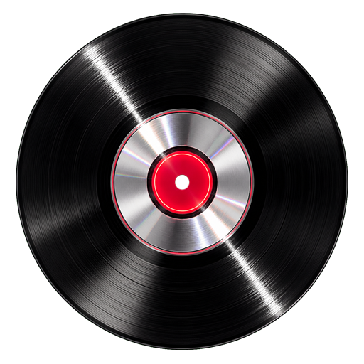
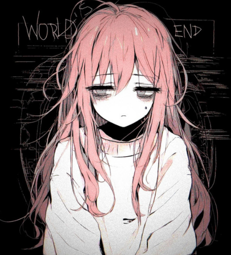
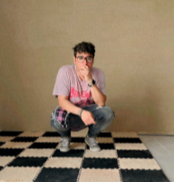
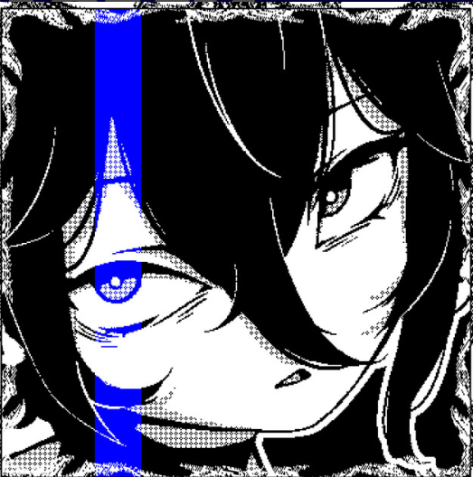
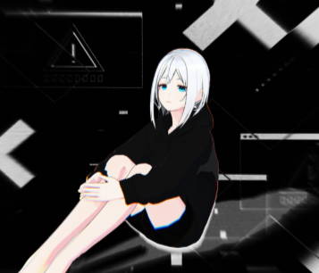
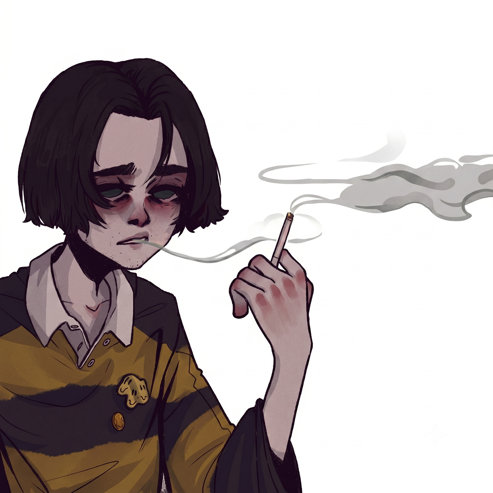
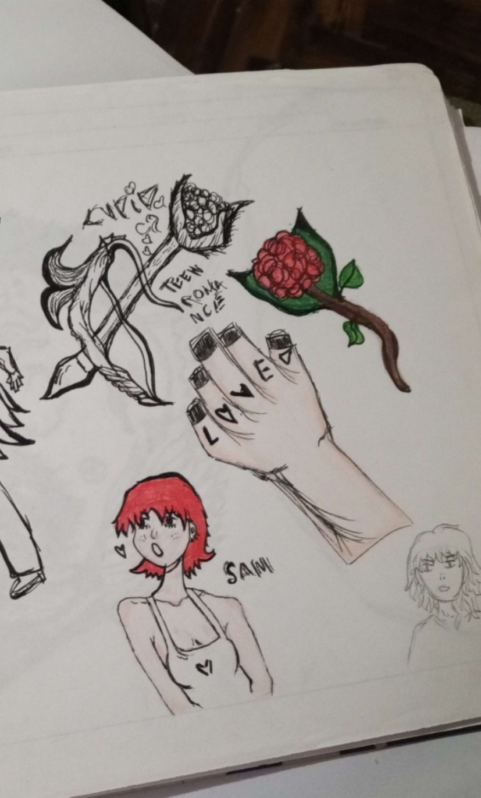

unrealcxre
Recorded by unreal archive
WORLD_SEED // UNREAL_175
generating amen breaks...
0%
Recorded by unreal archive
UNREAL_LIBRARY // 175 BPM
↻ toca una portada para explorarla









ARTCXRE_FOLDER
Sketches, drawings, cover concepts, and visual fragments from the Unrealcxre world.

Visual fragment // monochrome study

Character study // Unreal archive

Digital illustration // 2026

Character design

Traditional drawings // archive scan
Cover concept
Cover concept
Cover concept
Cover concept
Cover concept
Cover concept